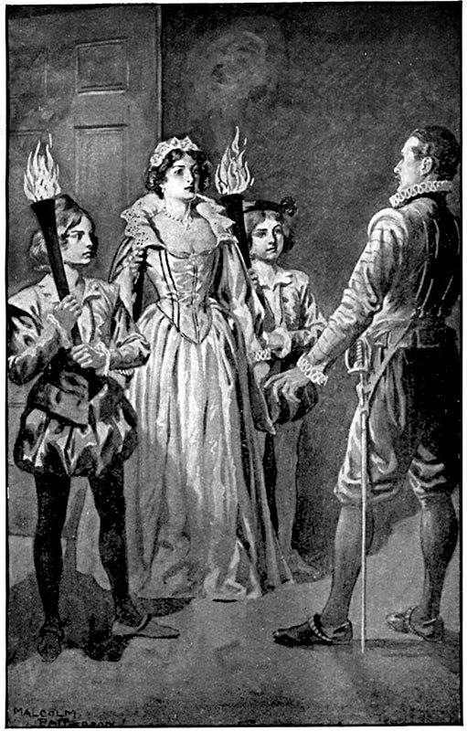

Оба дворянина, спросив дорогу у первого встречного, направились по улице Аверон, потом по улице Сен-Жермен– Л’Озеруа и дошли до Лувра уже в то время, как силуэты его башен начинали расплываться в сумерках.
– Что с вами? – спросил Коконнас, когда Ла Моль остановился, со священным трепетом разглядывая представшие его глазам подъемные мосты, узкие вытянутые окна и островерхие шатры на башнях.
– Право, и сам не знаю: у меня вдруг забилось сердце, – ответил Ла Моль. – Я не так уж робок, но почему-то этот дворец мне представляется угрюмым и, сказать правду, страшным.
– А что касается меня, – ответил Коконнас, – не знаю отчего, но я на редкость весел. Вот только наряд у меня неважный, – продолжал он, оглядывая свой дорожный костюм, – но это пустяки! Зато вид бравый. Да и приказом мне вменяется быстрота исполнения. А раз я выполняю его точно, значит, и буду принят хорошо.
И оба молодых человека пошли к Лувру, настроенные по-разному, в зависимости от только что высказанных чувств.
Лувр строго охранялся, и, видимо, количество постов удвоили. Сначала это обстоятельство смутило путешественников. Но Коконнас, уже заметивший, что имя герцога Гиза действует на парижан как талисман, подошел к одному часовому и, прикрываясь этим всемогущим именем, спросил, нельзя ли через его посредство проникнуть в Лувр.
Это имя, казалось, произвело обычное действие, однако часовой спросил у Коконнаса, знает ли он пароль?
Пьемонтец должен был признаться, что не знает.
– Тогда ступайте прочь, – ответил часовой.
В эту минуту какой-то человек, беседовавший с офицером охраны, но слышавший просьбу Коконнаса, прервал свой разговор и подошел к Коконнасу.
– Што фам укодно от херцог Гиз? – спросил он.
– Мне угодно поговорить с ним, – улыбаясь, ответил Коконнас.
– Невозмошно! Херцог у короля.
– Но я получил письменное уведомление явиться в Париж.
– А-а! У вас есть письменный уведомлений?
– Да, и я приехал издалека.
– А-а! Вы приехал издалека?
– Я из Пьемонта.
– Корошо, корошо! Это другой дело. А ваш имя?
– Граф Аннибал де Коконнас.
– Корошо, корошо! Тайте ваш письмо.
– Честное слово, прелюбезный человек! – сказал Ла Моль, обращаясь к самому себе. – Не посчастливится ли и мне найти такого же, чтобы пройти к королю Наваррскому?
– Так тавайте ваш письмо, – продолжал немецкий дворянин, протягивая руку к Коконнасу, стоявшему в нерешительности.
– Дьявольщина! Я не знаю, имею ли я право… – отвечал пьемонтец, проявляя недоверчивость по своей полуитальянской природе. – Я не имею чести знать вас.
– Я Пэм, я человек херцога Гиз.
– Пэм, – пробормотал Коконнас, – такого имени я не слыхал.
– Это месье Бэм, мой командир, – ответил часовой. – Вас спутало его произношение. Отдайте ему ваше письмо, я за него ручаюсь.
– Ах, месье Бэм! – воскликнул Коконнас. – Ну как же мне не знать вас! Ну конечно, с великим удовольствием, вот мое письмо. Простите мое колебание, но без этого нельзя, если хочешь выполнить свой долг.
– Корошо, корошо, не нато извинять себя.
Ла Моль тоже подошел к немцу и обратился с просьбой:
– Месье, вы так любезны, не возьметесь ли вы передать и мое письмо, как вы это сделали по отношению к моему товарищу?
– Как ваш имя?
– Граф Лерак де Ла Моль.
– Граф Лерак де Ла Моль?
– Да.
– Такой не знаю.
– Неудивительно, что я не имею чести быть вам знаком, я не здешний и так же, как граф Коконнас, приехал только сегодня вечером и издалека.
– А откуда вы приехал?
– Из Прованса.
– С один письмо?
– Да, с письмом.
– К херцог де Гиз?
– Нет, к его величеству королю Наваррскому.
– Я не служу у короля Наваррского, – крайне холодно ответил Бэм, – я не могу передавать ваш письм.
Бэм отошел от Ла Моля и, войдя в ворота Лувра, сделал знак Коконнасу следовать за собой. Ла Моль остался в одиночестве.
В ту же минуту из других ворот Лувра выехал отряд всадников, около сотни человек.
– Ага, вот и де Муи со своими гугенотами, – сказал часовой своему товарищу. – Они сияют, король им обещал казнить того, кто стрелял в их адмирала; а так как этот парень убил и отца де Муи, то сын одним ударом отомстит за обоих.
– Простите, – обратился Ла Моль к солдату, – ведь вы, кажется, сказали, что этот командир – месье де Муи?
– Совершенно верно.
– И что сопровождающие – это…
– Нечестивцы, говорю я.
– Благодарю, – ответил Ла Моль, как будто не слыша презрительного наименования, которым наградил гугенотов часовой. – Мне только это и надо было знать.
И тотчас подошел к командиру всадников.
– Месье, – сказал Ла Моль, – я сейчас узнал, что вы – месье де Муи.
– Да, месье, – учтиво ответил командир.
– Ваше имя, хорошо известное сторонникам протестантской веры, дает мне смелость обратиться к вам с просьбой оказать мне услугу.
– Какую, месье? Но сначала – с кем имею честь говорить?
– С графом Лерак де Ла Моль.
Молодые люди обменялись приветствиями.
– Я слушаю вас, месье, – сказал де Муи.
– Я прибыл из Экса с письмом от д’Ориака, губернатора Прованса. Письмо адресовано королю Наваррскому и заключает в себе важные и спешные известия… Каким образом я мог бы передать это письмо? Как мне пройти в Лувр?
– Пройти-то в Лувр очень легко, – ответил де Муи, – только я боюсь, что король Наваррский сейчас очень занят и не сможет вас принять. Но все равно, если хотите, пойдемте со мной, и я доведу вас до его покоев. Остальное зависит уж от вас.
– Тысячу благодарностей!
– Идите за мной, – сказал де Муи.
Де Муи сошел с лошади, бросил поводья своему лакею, подошел к решетке, назвал себя часовому, провел Ла Моля в замок и, открыв дверь в покои короля Наваррского, сказал:
– Входите и узнайте сами.
Затем поклонился Ла Молю и вышел.
Оставшись в одиночестве, Ла Моль огляделся.
Передняя комната была пуста, одна из внутренних дверей открыта.
Ла Моль сделал несколько шагов и очутился в каком-то коридоре. Он стучал и звал, но никто не отзывался. Полнейшая тишина царила в этой части Лувра.
«А мне еще говорили про строгий этикет! – подумал он. – По этому дворцу можно разгуливать, как по городской площади».
Он позвал еще раз, но с тем же успехом, что и раньше.
«Ну что же, пойдем прямо, – подумал он, – в конце концов встречу же я кого-нибудь».
Ла Моль направился по коридору, все больше погружаясь в темноту, как вдруг в противоположном конце раскрылась дверь, на пороге появились два пажа с двусвечниками и осветили фигуру выходившей дамы, величавой и замечательно красивой.
Сноп света упал прямо на Ла Моля, который замер на месте.
Дама тоже остановилась, увидев Ла Моля.
– Месье, что вам угодно? – спросила она, и голос ее показался молодому человеку прелестной музыкой.
– О мадам, прошу вас извинить меня, – сказал Ла Моль, потупив взор, – месье де Муи проводил меня сюда и ушел, а я ищу короля Наваррского.
– Его величества здесь нет; мне кажется, он у своего шурина. Но, за его отсутствием, вы разве не могли бы передать королеве…
– Да, конечно, если бы кто-нибудь соблаговолил представить меня ей.
– Вы перед ней, месье.
– Как?! – воскликнул Ла Моль.
– Я королева Наваррская, – ответила Маргарита.
На лице Ла Моля вдруг появилось такое выражение испуга и растерянности, что королева улыбнулась:
– Месье, говорите поскорее, а то меня ждут у королевы-матери.
– О мадам, если вас ждут, то разрешите мне удалиться – сейчас я не в силах говорить. Я не могу собраться с мыслями – я вами просто ослеплен. Я уже не мыслю, а только любуюсь.
Во всем обаянии прелести и красоты Маргарита подошла к молодому человеку, оказавшемуся, помимо своей воли, придворным утонченным льстецом.
– Месье, придите в себя, – сказала она. – Я подожду, и меня тоже подождут.
– О, простите мне, мадам, что я с самого начала не приветствовал ваше величество со всей почтительностью, какую вы вправе ожидать от одного из ваших покорнейших слуг, но…
– Но, – продолжила Маргарита, – вы приняли меня за одну из моих придворных дам.
– Нет, мадам, за призрак красавицы Дианы де Пуатье. Мне говорили, что он появляется в Лувре.
– Знаете, месье, после этого я за вас не беспокоюсь – вы сделаете карьеру при дворе. Вы говорите, у вас есть письмо для короля? Сейчас вам с ним не увидеться. Но это все равно. Где письмо? Я передам… Только, прошу вас, поскорее.
В один миг Ла Моль распустил шнурки у своего колета и вынул из-за пазухи письмо, завернутое в шелк.
Маргарита взяла письмо и прочла надпись.
– Вы месье де Ла Моль? – спросила она.
– Да, мадам. Боже мой! Откуда мне такое счастье, что вашему величеству известно мое имя?
– Я слышала, как его упоминали и король, мой муж, и брат мой, герцог Алансонский. Я знаю, что вас ждут.
Королева спрятала за тугой от вышивок и алмазных украшений свой корсаж письмо, только что лежавшее за колетом молодого человека и еще теплое теплом его груди. Ла Моль жадным взглядом следил за каждым движением Маргариты.
– Теперь, месье, спуститесь в галерею и ждите там, пока к вам не придут от короля Наваррского или герцога Алансонского. Мой паж проводит вас.
Отдав это распоряжение, Маргарита проследовала дальше. Ла Моль встал к стене, но коридор оказался слишком узок, а фижмы королевы Наваррской так широки, что ее шелковое платье коснулось молодого человека, и в то же время аромат крепких духов наполнил все пространство, где она прошла.
Ла Моль вздрогнул всем телом и, чувствуя, что сейчас упадет, прислонился к стене.
Маргарита исчезла, как видение.
– Месье, вы пойдете? – спросил паж, которому было поручено проводить Ла Моля в нижнюю галерею.
– Да, да! – воскликнул Ла Моль восторженно, видя, что паж указывает рукой в том направлении, в каком проследовала королева Маргарита, а он надеялся нагнать ее и еще раз увидеть.
В самом деле, выйдя на лестницу, он заметил королеву, уже спустившуюся в нижний этаж; случайно или на звук шагов Маргарита подняла голову, и он ее увидел еще раз.
– О, это не простая смертная женщина, – прошептал Ла Моль, – а богиня, и, как сказал Вергилий Марон: «Et vera incessu patuit dea».[2]
– Что же вы? – спросил паж.
– Иду, иду, простите, – ответил Ла Моль.

Паж пошел вперед, спустился в следующий этаж, отворил одну дверь, потом другую и, остановившись на пороге, сказал:
– Ждите здесь.
Ла Моль вошел в галерею, и дверь за ним закрылась. В галерее было пусто, только какой-то дворянин прогуливался взад и вперед и, видимо, тоже ожидал.
Вечерние тени, спускаясь с высоких сводов, окутывали все предметы таким мраком, что молодые люди на расстоянии каких-нибудь двадцати шагов, разделявших их, не могли разглядеть один другого.
Ла Моль стал приближаться к другому дворянину и, подойдя на несколько шагов, тихо сказал себе:
– Господи, помилуй! Ведь это граф Коконнас.
Пьемонтец обернулся на звук шагов и стал разглядывать Ла Моля с не меньшим изумлением.
– Черт меня побери, если это не месье де Ла Моль! Тьфу, что я делаю! Ругаюсь у короля в доме! А впрочем, и сам король ругается, пожалуй, еще почище, даже в церкви. Значит, мы оба попали в Лувр?
– Как видите; а вас провел Бэм?
– Да! Прелюбезный немец этот Бэм. А кто же провел вас?
– Месье де Муи… Я говорил вам, что гугеноты тоже немало значат при дворе… Что ж, повидали вы герцога Гиза?
– Еще нет… А вы получили аудиенцию у короля Наваррского?
– Нет, но должен получить. Меня провели сюда и сказали подождать.
– Вот увидите, это пахнет парадным ужином, и мы окажемся рядом на этом пиршестве. Действительно, какая игра случая! В течение двух часов судьба все время сводит нас… Но что с вами? Вы словно чем-то озабочены?
– Кто, я? – вздрогнув, спросил Ла Моль, все еще завороженный видением, представшим перед ним. – Нет, но само место, где мы находимся, вызывает во мне целый сонм размышлений.
– Философических, не правда ли? И у меня тоже. Как раз когда вошли вы, мне приходили на ум все наставления моего учителя. Граф, вы знаете Плутарха?
– Ну как же! – улыбаясь, отвечал Ла Моль. – Это один из самых любимых моих авторов.
– Так вот, по-моему, – серьезно продолжал Коконнас, – этот великий человек не преувеличил, когда сравнивал наши природные способности с цветами, ослепительно яркими, но преходящими, тогда как в добродетели он видит растение бальзамическое, с невыдыхающимся ароматом и представляющее собой лучшее лекарство для душевных ран.
– Месье Коконнас, вы разве знаете греческий язык? – спросил Ла Моль, пристально глядя на собеседника.
– Нет, но мой учитель знал, и он-то мне советовал побольше рассуждать о добродетели, если я буду при дворе. Это, говорил он, очень похвально. Так что, предупреждаю вас, по этой части я хорошо подкован. Кстати, вы не проголодались?
– Нет.
– А мне казалось, что в «Путеводной звезде» вас очень манила курица на вертеле; я лично умираю от истощения.
– Вот вам, месье Коконнас, отличный случай применить к делу ваши доводы в пользу добродетели и доказать ваше преклонение перед Плутархом, ибо этот великий писатель где-то говорит: «Полезно упражнять душу горем, а желудок – голодом» – «Prepon esti tên men psuchên odunê, ton de gastéra semô askeïn».
– Вот как, значит, вы знаете греческий язык? – в полном изумлении воскликнул Коконнас.
– Честное слово, да! – ответил Ла Моль. – Меня мой учитель выучил.
– Дьявольщина! Ваша судьба, граф, обеспечена: вы будете с королем Карлом сочинять стихи, а с королевой Маргаритой говорить по-гречески.
– А еще могу говорить по-гасконски с королем Наваррским, – добавил, смеясь, Ла Моль.
В эту минуту в конце галереи, примыкавшей к покоям короля, отворилась дверь, раздались шаги, и из темноты стала надвигаться чья-то тень. Тень приняла образ человеческого тела, а тело оказалось принадлежащим командиру стражи – Бэму.
Он в упор поглядел на лица обоих молодых людей, чтобы узнать своего, и жестом пригласил Коконнаса следовать за собой. Коконнас сделал рукой прощальный знак Ла Молю, и они расстались.
Бэм провел Коконнаса до конца галереи, отворил дверь, и они очутились на верхней ступеньке какой-то лестницы.
Тут Бэм остановился, посмотрел кругом и спросил:
– Месье де Коконнас, вы где живет?
– В гостинице «Путеводная звезда», на улице Арбр-сек.
– Корошо, корошо! Эта два шаг от сдесь… идить скоро в ваш гостиница и в этот ночь…
Он снова огляделся.
– Так что же в эту ночь? – спросил Коконнас.
– Так в этот ночь, – ответил он шепотом, – ви ходить сюда с белый крест на ваш шляпа. Пароль для пропуск будет «Гиз». Тс! Ни звук!
– А в котором часу должен я прийти?
– Когда вы услышить напат.
– Какой «напат»? – спросил Коконнас.
– Ну да, напат: пум! пум! пум!..
– А-а, набат!
– Так я и сказал.
– Хорошо, приду, – ответил Коконнас.
Он попрощался с Бэмом и пошел прочь, рассуждая сам с собой: «Какого черта все это значит и почему будут бить в набат? Все равно, я остаюсь при своем мнении, что этот Бэм – очаровательный немец. А не подождать ли мне графа де Ла Моль? Нет, не стоит: он, может быть, останется ужинать у короля Наваррского».
И Коконнас пошел прямо на улицу Арбр-сек, куда его тянула как магнит вывеска «Путеводной звезды». Пока Бэм беседовал с пьемонтцем, в галерее отворилась другая дверь, со стороны покоев короля Наваррского, и к Ла Молю подошел паж.
– Это вы – граф де Ла Моль? – спросил он.
– Он самый.
– Где вы живете?
– На улице Арбр-сек, в «Путеводной звезде».
– Хорошо, это рядом с Лувром. Слушайте! Его величество просил вам передать, что сейчас ему нельзя принять вас, но, может быть, он этой ночью пошлет за вами. Во всяком случае, если завтра утром вы не получите от него никакого извещения, приходите сюда, в Лувр.
– А если часовой меня не впустит?
– Да, правда… Пароль – «Наварра». Скажите это слово, и перед вами откроются все двери.
– Благодарю!
– Подождите, мне приказано проводить вас до самой железной решетки входа, чтобы вы не заблудились в Лувре.
«Да! А как же Коконнас? – сказал себе Ла Моль, уже выйдя из Лувра. – Впрочем, он останется на ужин у герцога Гиза».
Но первый, кого он увидел, входя к мэтру Ла Юрьер, был Коконнас, уже сидевший за столом перед огромной яичницей с салом.
– Ха, ха, ха! – расхохотался Коконнас. – Видать, вы так же пообедали у короля Наваррского, как я поужинал у герцога Гиза.
– По чести, так!
– И вы проголодались?
– Еще бы!
– Несмотря на Плутарха?
– Граф, у Плутарха есть и другое место, – смеясь, отвечал Ла Моль, – а именно: «Имущий должен делиться с неимущим». Итак, ради любви к Плутарху, не поделитесь ли со мной вашей яичницей, и мы за трапезой побеседуем о добродетели.
– Нет, даю слово, – ответил Коконнас, – все это хорошо в Лувре, когда боишься, что тебя подслушивают, и когда в желудке пусто. Садитесь и давайте ужинать.
– Теперь и я окончательно уверился, что судьба связала нас неразрывно. Вы будете спать здесь?
– Ничего не знаю.
– И я тоже.
– Я хорошо знаю только одно – где я проведу ночь.
– Где?
– Там же, где и вы, это ведь неизбежно.
Оба расхохотались и принялись за яичницу мэтра Ла Юрьер.